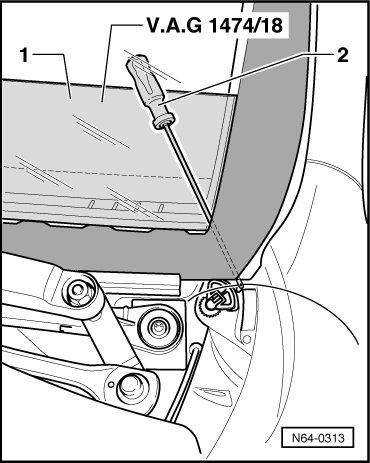
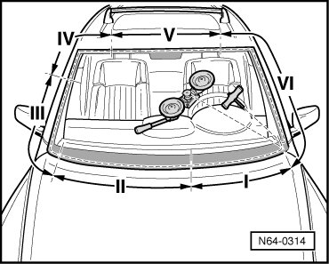

Windshield
Flush Bonded Windows
Windshield
CAUTION!
Make sure that wires are not damaged when windshield is cut out. The windshield must be replaced if the wires are damaged.
Only lower headliner enough that buckled areas do not form.
- Remove plenum chamber cover.
- Remove the right A-pillar lower trim.
- Remove sun visors.
- Remove console in headliner.
- Remove grab handle.
- Lower headliner (about 40 mm) until windshield can be cut out without damaging headliner.
- Pull off water deflector from retaining strip on A-pillar.
- Push the cover for instrument panel (V.A.G 1474/18) - 1 - in between the windshield and instrument panel.

• There is a marking on the protective film. Make sure that marking on protective film is pushed to trim on instrument panel.
• If cover is not pushed in far enough, noise insulation can be damaged.
- Loosen sealing lip along window flange in upper area of windshield using a plastic wedge, and spray on cleaning solution D 009 401 04 (as substitute for lubricant).
- Insert the cutting wire into the window flange using a tube.
If gap dimension is too tight:
- Cut off sealing lip using knife.
- Make sure the cutting cord is inserted under the corners of the windshield.
- Lay the cutting cord around windshield.
- Push cutting cord end through adhesive sealant into vehicle interior using awl (from (V.A.G 1474 A)).
- Secure one cord end to spooling tool (V.A.G 1654).

- Pull second cord end through inward and counterhold using pulling grip (V.A.G 1351/1).
- Set spooling tool (V.A.G 1654) into " Position I".
- Move the reel device as needed and cut the windshield out.
- When cutting, press the cutting cord against the glass with a plastic wedge.
If windshield is to be used again, make sure that electrical connections for windshield heating are not damaged.
If gaps are too narrow, the sealing lip on the windshield may become damaged. A so-called service sealing lip has been developed for this reason.
Installing
Window, Preparing for Glazing, refer to --> [ Removed Window, Preparing for Glazing ] Flush Bonded Windows
Window, New, Preparing for Glazing, refer to --> [ New Window, Preparing for Glazing ] Flush Bonded Windows
New windshield with viewing window for VIN for vehicles without VIN, preparing, refer to --> [ Windshield with VIN Viewing Area, Preparing ] Flush Bonded Windows
Window Flange, Preparing for Glazing, refer to --> [ Window Flange, Preparing for Glazing ] Flush Bonded Windows
Installation Information, refer to --> [ Flush Bonded Window Installation Information ] Flush Bonded Windows
Minimum curing time, refer to --> [ Minimum Curing Time ] Flush Bonded Windows